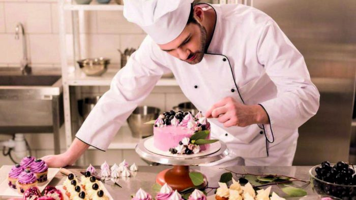
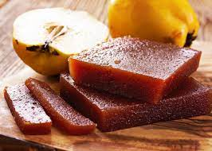
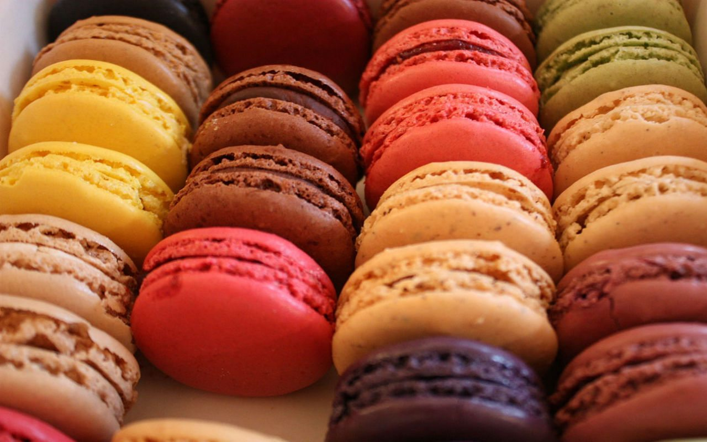

REPOSTERIA EN LA EDAD MODERNA
En esta etapa de la historia de la repostería, se produjo un gran auge de pastelerías y confiterías abiertas al público. También, se les comenzó a llamar reposteros a las personas que realizaban estos pasteles. En relación a las herramientas y utensilios para la repostería, se mejoraron los equipos y maquinarias que habían. Además, surgieron nuevas máquinas como la primera en hacer hielo y mejores métodos de conservación de los productos.
Esto ayudó a que se pudiese realizar una producción en masa de los pasteles más populares. Asimismo, se dejó de utilizar la levadura para las masas y se reemplazó por huevos.
En 1720, un pastelero suizo creó los primeros merengues, luego de batir las claras con huevo y azúcar. Así, se descubrió el secreto para levantar la masa de las tortas. Muchos comenzaron a escribir recetarios, obras y revistas especializadas en el arte de la repostería. Uno de los medios más conocidos en la historia de la repostería es La Confitería Española. Este tiempo ayudó a que la repostería alcanzara un alto nivel de elaboración. Además, Antoine de Carême, más conocido como el padre de la repostería moderna, ayudó a que el papel de los reposteros tome mayor importancia y valor en las ciudades.
Uno de los primeros libros de repostería, El Pastelero Real, definió muchas recetas de repostería que se usan hasta hoy y, también, determinó utensilios y productos especializados para realizar los pasteles. Es por ello que a Antoine de Carême se le atribuye el croquembouche, el merengue, el nougat, el voul au vent y el perfeccionamiento de la masa hojaldre.

Platos de repostería en la Modernidad:
El surgimiento de nuevas maquinarias y recetas innovadoras de repostería permitieron crear nuevos postres y pasteles para todos los gustos. Algunos ejemplos de repostería moderna son:
Letuarios de membrillo: dulces que se elaboraban para el Yom Kipur.

Pasteles de pasas: habituales para Hanukkah.
Frangipane o franchipán: crema compuesta de crema de almendra y crema pastelera, receta de los cocineros de Catalina de Medici, personaje clave de la historia de la repostería.

Macarons: de origen italiano, estos dulces de repostería surgen como cúpulas merengadas de base plana.

Pudding: postre navideño típico de los Tudor, que originalmente se utilizaba como remedio para los problemas de estómago.

Dato interesante:
Una de las reinas que más amaba las tortas fue Maria Antonieta de Austria, esposa del rey Luis XVI. Según muchos historiadores, ella pedía a los mejores panaderos de Francia la creación de tortas voluminosas para las fiestas que realizaba en el palacio de Versalles. Es así como esta reina es uno de los personajes clave en la historia de la repostería francesa.